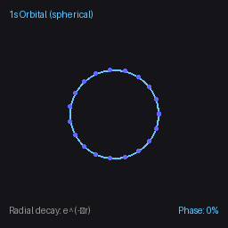
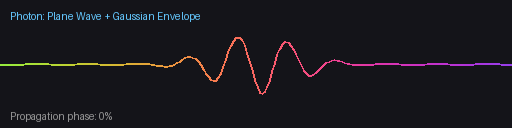
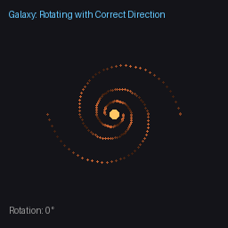
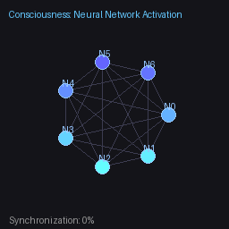
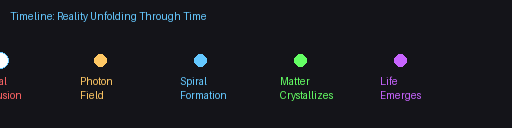

Everything unfolds as spirals. These animations show how spirals manifest the First Elections at every scale.
Every animation here shows spirals as the fundamental geometry of reality. Spirals aren't decorations—they're how the First Elections manifest in spacetime.
A spiral isn't a shape that happens to contain motion. A spiral IS the motion. When radial and rotational components compose, spirals are the inevitable geometry.
Watch these animations. Notice how every domain—electrons, photons, galaxies, minds— uses spirals to express the same irreducible sequence.
How reality generates from nothing—the irreducible foundation
Elections ≠ Causality. Elections are simultaneous, irreducible constraints. A photon's spiral and its rotation aren't cause-and-effect—they're one identity viewed two ways.
Quantum mechanical evolution from Elections 2+3+4

Each moment, the electron "probability cloud" has a different shape. Radial decay $e^{-\alpha r}$ always present.
Electromagnetic wave from Elections 2+3

Color gradient shows phase progression. The confined amplitude (wave packet) is what localizes the photon in space.
Inward matter flow from Elections 3+4

Neural activation from Elections 2+3+4

All Elections 1-4 unfolding in sequence

Each stage flows into the next—there are no separate "events," just continuous gradient resolution manifesting at different scales.